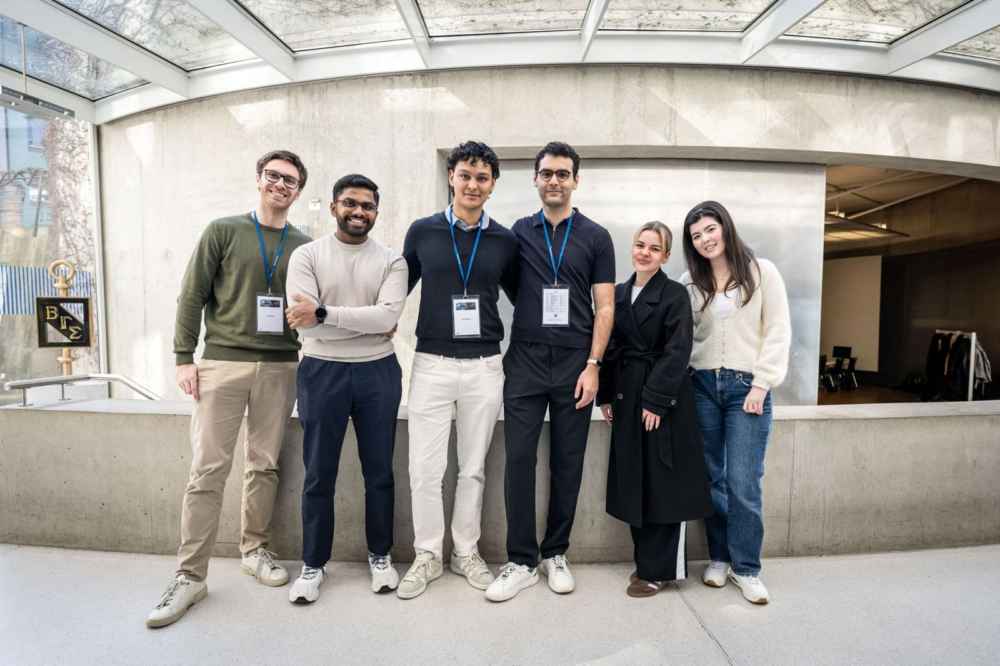

A 48-hour pitch and prototype built with a multidisciplinary team at ZHAW Innovation Weekend.
The full pitch we presented to the jury at ZHAW Innovation Weekend. Five minutes covering the problem, the approach, and the prototype.
The core AURA project team consisted of four members, all of whom are present in the photo below alongside two friends who supported the team throughout the weekend.

AURA reimagines investing as something deeply personal. Rather than starting from generic risk-return frameworks, the platform builds investment strategies around the individual.
An exciting step towards truly tailored financial solutions in an increasingly complex world.